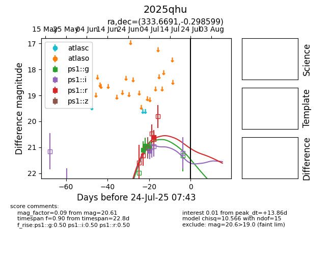

Target 2025qhu at 2025-07-24 07:43, see:
YSE: ziggy.ucolick.org/yse/transient_detail/2025qhu
alt names
2025qhu (yse)
coordinates:
equatorial (ra, dec) = (333.6691,-0.29860)
galactic (l, b) = (61.8281,-43.80075)
photometry
last ps1::g=20.95, ps1::i=21.15, ps1::r=20.61
3 ps1::g, 1 ps1::i, 1 ps1::r detections
